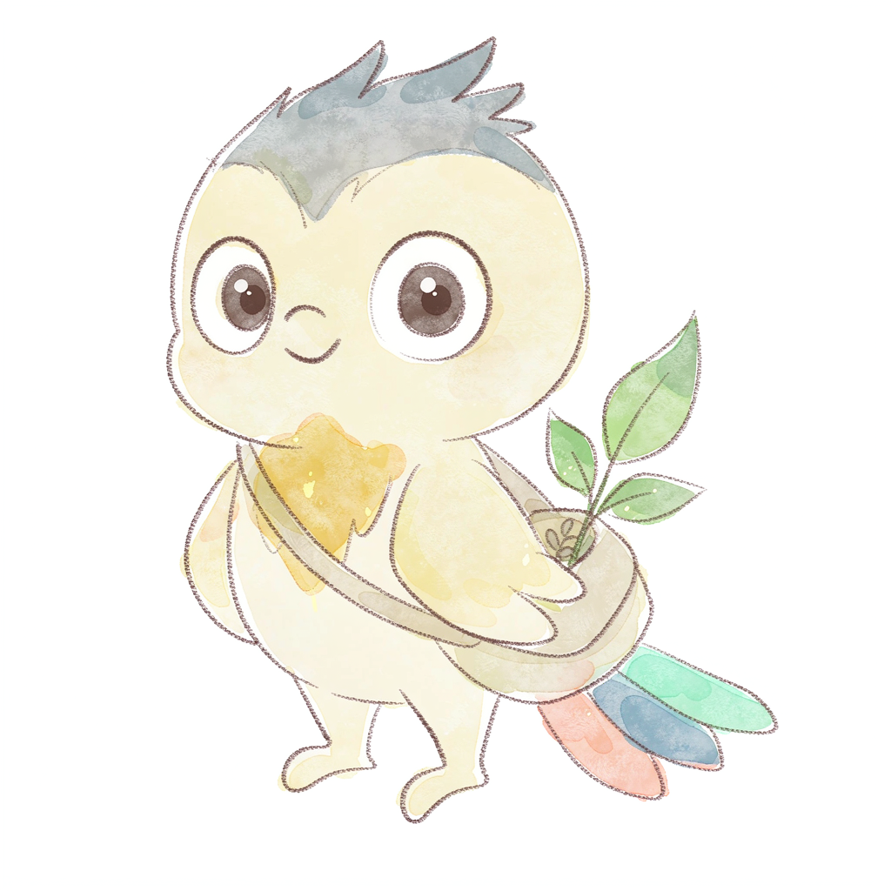

AI 伯乐 · 探索星球

嗨，我是阿拾，这颗星球的拾光鸟。今天星球背面好像发生了点事……你愿意陪我去看一眼吗？
陪阿拾去看看 ✶
你看——星球背面藏着一颗忽明忽暗的小星，还有一封没写完的来信。它好像在说：
有人需要帮忙
。 我们去看看它到底怎么了，好吗？
一颗在轻轻闪的小星
去瞧瞧它怎么了
你先看见了什么？
它在轻轻发抖
它在不停眨眼
它身边空空的
我也不知道
如果可以问它一句，你想问什么？
你哪里不舒服吗
你是不是找不到家了
你一个人害怕吗
说给小星听
把它记成一颗种子 →
现在我们要帮它
你想先看看哪一张？三条路都能帮到它
📖
把它的故事补完
一张没写完的故事页：小海龟找不到家……
🌊
动手帮它修个家
这座海底基地哪里坏了？你来当小工程师
🤝
去当一天小帮手
一封工作邀请函：今天你想先帮谁？
拾光手账 · 越走越长的线索
← 回到星球
故事共创
记一笔，回到星球
你一路都在留意小星有没有受伤。有两个地方很适合去试试——
社区医生
会照顾不舒服的人，
动物保护员
会照顾需要帮助的小动物。 你想先去哪一个？或者，六个地方你都能看看。
这次先不去了
绘本式串联 Demo · 聊天是唯一主入口，三张故事卡对应三个模块，职业由阿拾引导体验